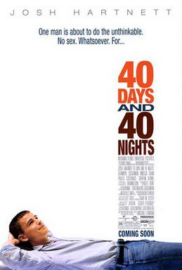

Incel
Incel, short for involuntary celibacy, is a sociological term[1] and adverse life circumstance. The term describes individuals who can not engage in romantic or sexual relationships despite a desire to. The term mainly refers to men (malecel), with a counterpart term (femcel) used for women. The term inceldom is commonly used to refer to the state of involuntary celibacy.
Those who experience inceldom often refer to themselves as, or are dubbed by others, as incels. The concept of involuntary celibacy is not confined to a single political movement or online subculture. Many self-identified incels do not participate in any specific online forum. Major modern incel forums include Incels.is.
With the term originating in classical literature, involuntary celibacy is increasingly recognized as a significant social circumstance, with varying interpretations and definitions. While some view involuntary celibacy as a nonsexual identity, others associate it with online communities who self-identify as incel, often from a negative perspective. Indeed, the Cambridge Dictionary and Wikipedia definitions of incel assert the term exclusively refers to "misogynistic [...] nihilistic [...] online subcultures".[2][3] These hostile definitions of inceldom have been disputed and arguably constitute misinformation.[4][5]
The unifying themes of inceldom are a mixture of low social or sexual value and sexual frustration, as individuals who are truly content with their lack of sexual access, even if it wasn't chosen, would generally be considered voluntary celibate. Most self-identified online incel communities also assert that primarily, or only, men can be involuntarily celibate, excluding self-identified femcels.
Involuntary celibacy has been a subject of academic study, being first explicitly examined in the Donnelly Study, which defined it as the inability to find a sexual partner for six months despite the desire. The broader phenomenon of inceldom, while receiving increased attention in the 20th century, has historical precedents, indicating the longstanding existence of inceldom as an adverse life circumstance in human society.[6]
In the contemporary era, efforts to understand and address involuntary celibacy include academic research[7] and policy discussions. In certain countries like the Netherlands, there have been considerations of sex as a basic human need.[8]
Definition of inceldom[edit | edit source]
The Donnelly Study defined incels as adults who fail to find a sexual partner for six months or more without choosing so. There remains disagreement about whether this definition is appropriate due to conceivable loopholes. For example, Bluepillers often argue in bad faith about such definitions and say male incels could simply have gay sex or pay for a prostitute and, therefore, they are volcels and incels don't exist. Hence, a definition in good faith would include an addition that incels are adults who are overwhelmingly romantically rejected by the members of the sex they are sexually attracted to.
On incel forums, gatekeeping and infighting about who counts as incel is common. Uglycels complain that love-shys and standardcels simply lack will to find a partner. In an effort to weed out standardcels, some incel forums reject incels who have not seriously and repeatedly attempted dating. In doing so, however, they inadvertently marginalize non-standard mentalcels. This is the source of a lot of conflict in the incelosphere. A solution to this longstanding conflict would be an incel definition that rejects standardcels but includes non-standardcel mentalcels as incel. This has been formalized before, but has not been popularized or adopted yet by any major forum, perhaps because of the effort required in enforcing such a complicated definition.
The infighting over whether to include love-shies in incel forums mainly hinges on the meaning of involuntary, and whether involuntary means "without choice" or "against will". However, in different contexts, the word involuntary can mean either, and both are different experiences. According to the definition in the Donnelly Study, inceldom is not the same as permavirginity or trueceldom, meaning even someone who is only experiencing a dry spell may find himself involuntarily in this situation and hence may count as incel.
Demographics of incels[edit | edit source]
The vast majority of men are not asexual or aromantic, so most men that have never been in a relationship are circumstantially lonely rather than because of preference. According to the Center for Disease Control, most Americans have penis-and-vagina intercourse by age 17.[9] Assuming incel to be defined very broadly such that all lifelong single men are incels, then this includes 15-30% of 18-30 year old American men, a third of which are 18-20 year old American men. Since a very large share of men who have not had any romantic experiences by age twenty will end up doing so at later time, only a minority of these people are likely actually "involuntarily celibate" in the strictest definitions of the term. A better estimate would look at only older heterosexual men. The same CDC report says that 10% of American men age 24 report having no sexual experience. In Japan, a more extreme case, 25% of men over the age of 30 are virgins.[10] It's thus possible, then, that most 30-year old American or Japanese men have an incel male acquaintance, even if that acquaintance doesn't personally identify as such.
Incels are politically diverse.[11] Some incels believe in the bluepill, purplepill, blackpill, or the redpill, while others do not subscribe to any pills. The most common shared beliefs among self-identified incels are hard determinism and that most claimed female incels are voluntary celibates because of men's higher sex drive.
Incels are also racially and ethnically diverse. Polls on Braincels and incels.co show that whites constitute only half the forum populations, with East Asian and Indian users being over-represented among Americans (see Demographics § Race).
Other facts gleaned about self-surveyed incels.co users include:
- 78% suffer from extreme sadness, anxiety, and stress.
- 82% have considered suicide.
- 62% have considered surgery to improve their looks.
- 77% report being a healthy weight or underweight (only 23% report being overweight, which is far less than the general American population average).
- 57% report receiving a medical diagnosis labeling them as non-neurotypical or as having a physical disability that impairs their normal daily functions.
Adverse effects of inceldom[edit | edit source]
Incel life is miserable, especially for the socially disconnected. Isolation and sexlessness are associated with various health risks. One study found that losing one's virginity after their mid 20s is associated with erectile dysfunction and anorgasmia later in life.[12] Another study found that delayed sexual activity "creates health risks by impeding development of the emotional, cognitive, and interpersonal skills that are crucial to satisfactory sexual functioning and general well-being."[13] Most incels consider their lack of romance one of the worst aspects of their lives, and it's sometimes described by them as the most negative effect of poverty or mental/physical disability.
Life as an incel[edit | edit source]
Incel life is plagued by an unending attempt to cope with one's sexual frustration. This frustration is exaggerated by highly sexualized social and mainstream media, causing incels to feel regret and envy about missed or unattainable opportunities for love and sex, a feeling that affects men more than women. The general public mostly favors that allosexual incels behave in a completely asexual manner, i.e. to suppress their sexual needs. Incels are generally completely discouraged from voicing their sexual concerns, expressing sexual desire or making sexual advances.
When pressed, some members of the public will deny to incels that sex is a need at all, despite a majority of the public rating sex the most pleasurable, joyous, and meaningful regular life experience they have.[14] Women find men who do not have sex less appealing, both as romantic partners and as friends.[15] Incels, regardless of whether or not they identify as such, are usually fully aware on some level that missing out on pair bonding greatly negatively affects their self esteem.
Can't an incel see a hooker?[edit | edit source]
As with the general public, incels cannot generally afford regular visits by prostitutes, and seeing a prostitute comes with various legal and health risks that can be prohibitive depending on where the incel lives. Most importantly, frequenting prostitutes or being a sugar daddy/mommy does not count as a romantic, or even social relationship, but rather a financial relationship, as the relationship remains without mutual affection when without money. escortcels frequently characterize prostitution as an incomplete sexual experience, as it lacks sexual validation, a key component of most relationships. It is also not accompanied by the status- and self-esteem-elevating experience of being selected as a partner. Legalization of prostitution can mitigate the side effects of inceldom, but it would never permit incels to fulfill the romantic experience of real sexual relationships. All of this being the case, more incels would see prostitutes if they were legal.
The majority of incels want genuine companionship.
Love-shy vs. Incel[edit | edit source]
Being love-shy means fear of engaging in or attempting to start romantic or sexual relationships. It is possible for a person to be both incel and love-shy, and many are to a certain degree. For instance, it is common for incels to suffer large numbers of negative courting experiences, and eventually become love-shy and unable to approach. Love-shyness can sometimes even persist after an incel succeeds in becoming more sexually attractive. Despite this, love-shyness is usually not considered a reason in of itself for inceldom if it is unaccompanied by other factors.
Incelosphere[edit | edit source]
There are a loosely connected set of websites and forums wherein people gather to discuss being romantically unsuccessful, not all of which use incel terminology or portray themselves as "incel forums". Those who visit these sites are affectionately referred to as cybercels or incelospherians. This network of online communities wherein people experiencing inceldom gather is sometimes called the incelosphere. In 2023, due to the spread of the blackpill on tiktok, many users began identifying as incels, thus forming the sub-culture of tiktokcels.
Frequenters of the incelosphere are unrepresentative of inceldom as a whole, as the vast majority of incels do not participate in these forums. For example, there are millions of American men over the age of 35 with no sexual experience, a large portion of which could be described as "involuntarily celibate", but no incelosphere forum comes close to reaching this membership. This is for several reasons, but the largest one is probably popular portrayal of incels as extremely violent and misogynistic. The incelosphere constitutes the segment of inceldom that is sociable enough to have a proclivity for joining these online communities and choose to do so despite the strong negative sentiment against them.
Click here for a full list of active incel forums.
Click here for a full list of incel vloggers.
Incelism[edit | edit source]
Incelism is any sort of activism that attempts to solve involuntary celibacy on a societal scale. An incelist is someone who advocates on behalf of incels. Some of these efforts include:
- Larger public spending on mental health resources, with specific help for mentally ill people navigating courtship.
- Advocating for socially arranged partnerships.
- Increasing public acknowledgement and consciousness of the halo effect, and the privileges of the sexually attractive.
- Supporting wealth redistribution from the beautiful to the ugly, or rich to the poor.
- Support for public subsidization of plastic surgery, a practice with obvious positive externalities.
- Greater acceptance of male makeup, fashion, and grooming, so that naturally ugly men have better prospects.
- Large-scale improvements in male sexual attractiveness via exercise or date coaching.
- Socially encouraging men to keep sexual standards, and discouraging casual sex in general.
- Calling out the practice of polygyny, especially inadvertent or unannounced polygyny, and cheating.
- Helping men migrate out of areas with unnaturally lopsided gender ratios.
Chadsplanation[edit | edit source]

Since normies, chads, beckys, stacies, tanners, and brads don't like to pair up people anymore, they tell incels it's near 100% incels own fault that they can't find a partner. This will usually be accompanied by self-help "advice". For example:
- Incels are told by normies that looks don't matter, while at the same time get asked for pictures to see how ugly they are, and are assumed to not take enough showers, get enough haircuts or in general have a poor sense of fashion.
- They tell incels to be themselves but to pick up hobbies they don't like.
- They tell incels that pick up artists are full of shit, while also claiming that incels don't have enough 'game' to date rape drunk women at bars 'pick up women'.
- They tell incels that sexual intimacy is unimportant, while buying and creating movies and songs about how sexual intimacy is one of the most important things in the world, and getting upset if they have a few week-long dry spells.
- They tell incels that they 'just need to get laid,' and also that they 'don't need sex.'
- They tell incels that sexual intimacy isn't a commodity in a game with a reward, but think of male virgins as "losers" and frequently refer to intimacy as something incels don't "deserve".
- They will insist that sexual freedom is a sorting mechanism for male feminists, or good personalities like OJ Simpson and Jeremy Meeks, and that your local grocery store bagger deserves to be an incel because of his political opinions or "entitlement". This is also known as the appeal to nature fallacy.
In reality, since inceldom is miserable for most self-identified incels, most have spent large amounts of time, money, and social capital researching and attempting sexual success. Simple attitude or outlook changes almost never succeed in helping ugly men find sexual partners. Commonly attempted remedies include showers, rigorous exercise, haircuts, cosmetology, skin/face treatments, feminist dating advice, manosphere dating advice, aggressive and nonaggressive courting strategies, income and status-maxxing, and even surgery. Unfortunately, as would be implied by the term "incel", these were not successful to the point that future attempts seem depressingly futile.
Summary[edit | edit source]
To summarize, normies typical responses to incel's complaints reveal a mix of dull incomprehension, attempted gaslighting, and dismissive attitudes on behalf of the normie. Posturing about 'how easy it is to get laid' and other similar forms of attempted signaling of Chad-traits is also a common reaction among normie males. Appraised collectively, these responses appear to indicate that the normie generally lacks any capacity of intelligence and empathy, and also that they are often deeply insecure, despite their frequent simian exhortations to the effect that 'confidence' and 'self-esteem' are traits that are required to attract potential sexual partners. Normies indeed seem to lack both cognitive and affective empathy as normies (of both sexes) often can't comprehend that someone would struggle at all with attaining romantic relationships, and even if they can intellectually grasp the concept, they are usually not inclined to be sympathetic to individuals afflicted with a low potential to achieve success in romance.
Normies' discomfort with the frank discussion of inceldom may also be because normies perceive inceldom as an uncomfortable fact of life that they would rather not consider, which is revealed by their dismissive responses to incel's woes, the normie frequently attempts to mentally suppress the concept of inceldom. This mental complex often takes the form of inceldom denial. The latter category of response, especially when it comes from normie males, is often suffused with a palpable sense of insecurity, likely as many normie men subconsciously realize their own non-cel status is precarious, being determined by their ability to perform the mixture of Jestermaxxing and simping, and other forms of self-abasement that lower-tier men typically require to gain sexual access to females. So, the incel's open discussion of the issues with the dating market can also take the form of the reactions in the "Emperor's New Clothing" type fable, where mentioning an issue is perceived as bringing it into being, thereby provoking a negative psychological reaction on behalf of the irrational normie.
The other category of normie responses to inceldom takes the form of various forms of sadistic bullying, though among adults, this often expressed passively due to normies' typical cowardice and fear of negative social evaluation. This is because revealing one is struggling with dating marks you as low-status in the eyes of normoids, which means you are a prime target for bullying, as bullying increases the normies relative status among other normies, or at least prevents status from declining due to perceptions of association with a low-status individual such as an incel. This means that (in many cases self-professed) normies that like to bully incels are often borderline social rejects that are scarcely more sexually successful than the typical themselves, as the example of the typical user of the various anti-incel communities on Reddit demonstrates. Thus, this group of normies is hostile towards incels primarily to create social (and psychological) distance between incels and themselves, and they are, in many cases, actually themselves incel according to the strict sociological definition of involuntary celibacy.
Incels in history[edit | edit source]
Since inceldom is a life circumstance or deprivation, as opposed to a modern internet based subculture, there have of course been many incels throughout human history. A famous story of historical inceldom is the tale of the rape of the Sabine women by the ancient Romans. According to Roman tradition, after the city of Rome was founded by the legendary Romulus, the city was originally inhabited by mainly male pioneers who had followed Romulus in establishing the city. Due to the lack of marriageable women, this lead to many Roman men becoming involuntarily celibate. The elders of Rome planned to redress this by sending diplomats to foreign tribes asking for arranged marriages between their women and Roman men. However, the neighboring tribes of the Romans deeply distrusted the Romans, and feared their ascendant power. This led to Romulus devising a ruse; where he established a festival (Consualia) dedicated to a newly discovered god named Consus. He then invited several neighboring tribes to attend this festival. The entire population of a neighboring tribe named the Sabines apparently attended the festival. Romulus had previously arranged with his men that, when he gave the signal during a feast attended by the Sabines, they would violently spring into action and abduct and run off with the Sabine women. This mass rape led to a war between the Romans and the Sabines, which concluded with a peace treaty being concluded between the Romans and the Sabines, (with the Sabine women acting as intermediary's between their new Roman husbands and their Sabine male relatives). This ultimately resulted in the two tribes being united under Roman rule.
Many prominent figures throughout history were probably incel or very likely incel, to briefly note a few: Beethoven, Nietzsche, Van Gogh, Henri de Toulouse-Lautrec, Otto Weininger (likely, but not proven), the deformed dwarf companion of the Islamic prophet Muhammed, Julaybib[16] (who ascended through an arranged marriage prior to being killed in battle, after being described as "the one who had spent a lifetime in despair"), and likely many others.
It is very likely the term "Involuntary celibacy" was coined in 1739 by French writer and clergyman Antoine Banier. He used it in a sense that implied that customs at the time, that led to men and their families demanding a dowry in exchange for marrying a woman, resulted in some women being unable to marry, thus leading to them being incel (because female extramarital sex was heavily socially discouraged at the time). The frequency in use of the term seemed to increase in the 19th century (in the modern sense)[17], with a lull in usage of the term in the 20th century, before seeing a resurgence in interest in the topic in the 1990s.
Etymology[edit | edit source]
Celibacy comes from Latin caelibatus 'unmarried state.' From the 1950s onward celibacy shifted in meaning to refer to a state of sexlessness, voluntarily or otherwise, without reference to marital status.[18] The term involuntary celibacy has likely independently been conceived of by various writers throughout history. The earliest recorded usage of it was by a French clergyman, Antoine Banier, who used it in 1739 in his collection of Ancient Greek fables.
Henry Flynt discussed male involuntary celibacy, in relation to being perceived as creep, in his 1975 book Blueprint for a Higher Civilization.
The feminist creator of the first known incel discussion forum, Alana, did not coin the abbreviated version of the phrase "incel" as has been commonly promulgated in the media. She merely introduced a prior attempt at shortening the phrase, as "invcel," in 1997. It was pronounced "invacel." As this sounds similar to the term "imbecile", she later adopted "incel" at the suggestion of someone in the mailing list she created; this new contraction was also easier to pronounce.
The term "incel" was later used in the Donnelly study in 2001, which was the first formal academic exploration of the subject. Later, in 2018, the term was lexicographically recognized in a Dutch-language online dictionary.[19]
Special types of celibates[edit | edit source]
Celibates are often divided into categories via a term preceding suffix -cel, where the precedent indicates either the reason for their sexlessness, or one of the celibate's characteristics. This has created a huge variety of various -cel terms used to describe subcategories of incels. The -cel suffix is often used humorously, and is often utilized in a way that does not imply a literal claim that the group of individual being describes is literally involuntarily celibate.
Incels also often disagree on which of these statuses represent actual sexual disadvantage, so some usages of the suffix -cel may contradict each other.
| Origin & race |
Arabcel • Beancel • Blackcel • Currycel • Ethnicel • Francel • Hapacel • Italiancel • Slavcel • Persocel • Redcel • Ricecel • Turkcel • Whitecel |
|---|---|
| Religion | |
| Disease & mental |
Mentalcel • Autistcel • Spergcel • Disabledcel • Emcel • Gynocel • Manchildcel • Medcel • PSSDcel • Stuttercel • Downcel |
| Looks |
Acnecel • Baldcel • Chincel • Cutecel • Dickcel • Eyecel • Fatcel • Framecel • Haircel • Heightcel • Nosecel • Ramuscel • Thincel • Uglycel • Wristcel • Earcel • Gingercel |
| Sex |
Mancel • Femcel-lite • Femcel • Truefemcel • Lesbocel • Queercel • Rainbowcel • Transcel • Intercel • Kinkcel |
| Job | |
| Misc. |
Cybercel • Escortcel • Incompetencel • Gymcel • Locationcel • Countrysidecel • Denialcel • Nearcel • Semicel • Noncel • Fakecel • Truecel • Volcel • Nymphocel • Marcel • Mismatchcel • Oldcel • Youngcel • Shycel • Incelosphere rifts • Standardcel • Stoicel • Voicecel • Weebcel • Sistercel • Protocel • StormFrontcel • Kitchencel • Happycel • Tiktokcel |
Synonyms for incels[edit | edit source]
The term "incel" is now politically charged, but there are, of course, many other words and phrases with exactly or nearly the same meaning. For the mass noun version of synonyms, click on synonyms of inceldom. For gender-specific words see mancel or femcel. Synonyms of incel include:
- Aybee (eye dialect spelling of Absolute Beginner)
- AFC (average frustrated chump)
- Bare branch (Chinese term)
- Bottom deciler
- Circumstancial celibate/virgin
- Chode
- Cockblockee
- Coy
- The cold-shouldered
- Crossed in love
- Dry dicker
- Dry speller
- Dating realist
- First baser
- Forever aloner
- Friend-zonee
- Frigid
- Fuckstrated person
- Genetic dead end
- Guang gun (Chinese term)
- Hard up
- High testosterone hikikomori
- Inceldom patient
- Incelibate
- INVCEL
- Involuntary sexual abstinent
- I-sexual
- Kakuhido
- KHHV
- Late bloomer
- Layless
- Leftover man (Chinese term)
- Long term celibate
- Lonelyheart
- Love avoidant
- Loveless
- Love-shy
- Lovelorner/lovelornee
- Moggee/mog-victim
- Nonbloomer
- Nonogamous
- Nonredamant/nonredamancee
- Omega
- Oxytocinless person
- Permavirgin
- Perpetually left swiped
- Perpetually single
- Refused man
- The romanceless
- Romantic rejectee
- Caso Umano (term Italian women use for incels)
- Relationship challenged
- Relationship-shy
- Romantically challenged
- 'Rubbish men' (New Guinean term for 'unmarriagable men').
- Sexual dormancy
- Sexual have-nots
- Listva (Russian term)
- TFLer
- TFLheart
- Thirstie
- Undateables
- Unfuckables
- Unshaggable
- Unintentional celibate
- Unrequitee
- Unreciprocatee
- Un-sexual
- Unwillingly Single / Unfreiwillig Single
- Sura Mbaya
Synonyms of inceldom[edit | edit source]
Synonyms of inceldom or incels outlines the synonyms or near-synonyms of the term "inceldom". It is the mass noun equivalent for the term incel. To see the synonyms for the countable nouns, see the article synonyms. The most commonly used metonym for the word inceldom is lovelessness.
- AFCdom
- AFCness
- Datelessness
- Forever aloneism
- Fuckstration
- Incelhood
- Incelibacy
- Incelry
- Laylessness
- Lovelessness
- Love-shyness
- Maidenless
- Nice guy syndrome
- Nonredamancy
- Permavirginity
- Romancelessness
- Sahara-itis
- Sexlessness
- Sexual no-man's land
- Thirstiness
- Touch starvation
- True Forced Loneliness
- Undateability
- Unfuckability
- Sura Mbaya
Meme gallery[edit | edit source]
See also[edit | edit source]
External links[edit | edit source]
- WebMD article on involuntary celibacy (archived version)ile:fragilebigots2.png
File:67.jpg </gallery>
References[edit | edit source]
- ↑ https://www.tandfonline.com/doi/abs/10.1080/00224490109552083
- ↑ https://dictionary.cambridge.org/us/dictionary/english/incel
- ↑ https://en.wikipedia.org/wiki/Incel
- ↑ https://incels.wiki/w/Inceldom_FAQ
- ↑ https://www.psychologytoday.com/intl/blog/articles-heterodoxy/202208/inside-the-minds-the-incels
- ↑ https://incels.wiki/w/Incelosphere_timeline
- ↑ https://scholar.google.com/scholar?hl=en&as_sdt=0%2C5&q=%22incel%22+involuntary+celibacy&oq=%22incel%22
- ↑ https://web.archive.org/web/20170503151557/https://www.nytimes.com/1992/08/04/news/04iht-sex_.html
- ↑ http://www.cdc.gov/nchs/data/nhsr/nhsr036.pdf
- ↑ http://www.telegraph.co.uk/news/worldnews/asia/japan/11662500/Rise-of-Japans-middle-aged-virgins-a-quarter-of-over-30s-have-never-had-sex.html
- ↑ https://www.reddit.com/r/askanincel/comments/dn62od/political_leanings/?sort=new
- ↑ http://web.archive.org/web/20170622044005/https://abcnews.go.com/Health/Sex/story?id=3932047
- ↑ https://www.vice.com/en_ca/article/78bmza/the-cost-of-losing-your-virginity-late
- ↑ https://incels.wiki/w/Scientific_Blackpill#Sex_is_the_most_pleasurable.2C_joyous.2C_and_meaningful_human_experience
- ↑ https://incels.wiki/w/Scientific_Blackpill#Women_are_more_attracted_to_men_who_are_already_in_relationships_than_single_men
- ↑ https://www.islamstory.com/en/artical/3408730/Julaybib
- ↑ https://incels.wiki/w/Incelosphere#Background
- ↑ https://www.etymonline.com/word/celibacy
- ↑ https://www.vandale.nl/wvdd-incel